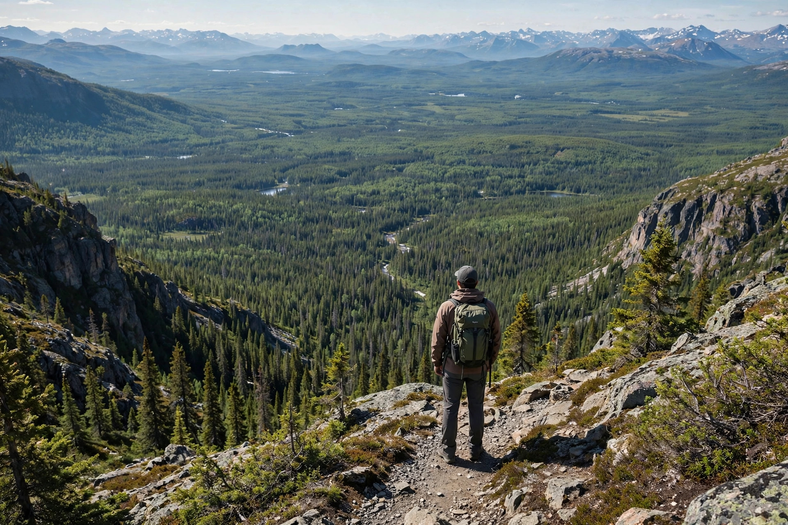

Vrai Québec
The real Quebec, beyond the postcards — its regions, its road trips, and its wide-open outdoors, curated by people who actually drive these roads.
Four regions, four different Quebecs
Quebec is enormous — bigger than most countries — and it doesn't feel the same everywhere. Pick the Quebec you want: ski hills and outlet villages an hour from Montreal, rolling farmland and vineyards near the American border, cliffs and belugas along the St. Lawrence, or the end-of-the-world drama of the Gaspé Peninsula.
The Laurentians
Mont-Tremblant's slopes, Saint-Sauveur's village streets, SEPAQ's Parc national du Mont-Tremblant, and the most famous fall colours in the province — 60 to 90 minutes north of Montreal on Routes 15 and 117.
Read the guide →Eastern Townships
Magog and Lac Memphrémagog, Mont-Orford's national park, Sutton's mountain town charm, and the Route des vins through Dunham and Brome-Missisquoi. Quebec's gentlest landscape.
Read the guide →Charlevoix
Baie-Saint-Paul's art galleries, La Malbaie's grand hotels, the jaw-dropping Hautes-Gorges-de-la-Rivière-Malbaie, and Le Massif's ski slopes falling toward the St. Lawrence.
Read the guide →Gaspésie
Percé and its famous rock, Île-Bonaventure's gannet colony, the Chic-Chocs of Parc national de la Gaspésie, and Route 132 tracing the sea all the way around. The big one.
Read the guide →Road trips worth the drive
Quebec rewards drivers. These are complete, day-by-day itineraries built from real routes — where to stop, how long to stay, and what not to miss.
Tour de la Gaspésie
The full loop around the Gaspé Peninsula on Route 132 — five to seven days of coastline, fishing villages, Percé, and mountain parks. Quebec's greatest road trip, done right.
See the itinerary →Laurentians Weekend
Two or three days from Montreal: Saint-Sauveur's village, Mont-Tremblant's resort and national park, and the P'tit Train du Nord trail. The perfect first escape.
See the itinerary →A province built for the outdoors
SEPAQ runs 24 national parks across Quebec — from the Chic-Chocs to the Laurentians — plus whale watching at Tadoussac, world-class skiing at Mont-Tremblant and Le Massif, and the 232-kilometre P'tit Train du Nord cycling trail. Our outdoors guide covers it all — and our Adventure hub goes deeper, with the best hikes, ski hills, and waterfalls, trail by trail.

Independent, human, no nonsense
Vrai Québec is written by Quebecers who drive these routes. No sponsored rankings, no paid placements, no content farms — just practical guidance on the places we know. Read more about the guide, or write to us at info@montrealguide.ca.